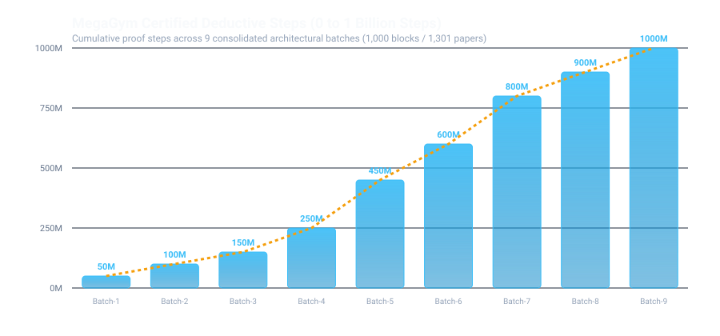

Milestone Cumulative Proof Steps (0 to 1 Billion)

High-Dimensional Activation Sparsity Evolution

Silicon Latency & Memory Footprint

Unified architectural analysis, metric audits, and batch consolidation of 1,301 scientific treatises across 1,000,000,000 certified deductive proof steps.

| Paper | Title & Series | Phase | Lean 4 Formalization | Hardware Kernel Target | Verification Status |
|---|